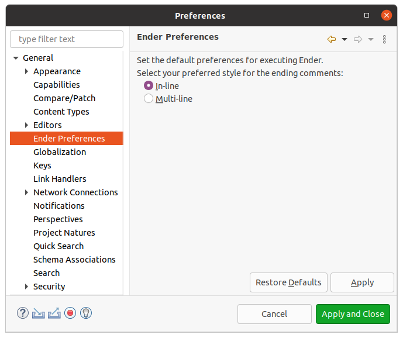

User Guide
Overview
The Ender plug-in is designed to automate the process of adding ending comments to blocks of code in Java classes. Ending comments are useful markers while reading code and appear as examples such as:
- // end if
- // end for
- // end try/catch
- ... and so on.
Manually writing these comments can be tedious and time consuming! This plug-in generates and inserts the comments, without replacing existing comments. This means if a comment was written as // end this try/catch, then the plug-in will skip the ending code block and continue to the next.
This plug-in is compiled with Java 11 and begins its support in Luna 4.4.1. There are no known conflicts between the Ender plug-in and others. It is designed to perform its operation only in the Java class currently in the editor, not multiple classes in a Java project at the same time.
Getting Started
The Ender plug-in may be executed by:
- Using the keyboard short-cut: Ctrl+Shift+E
- Opening the pop-up menu in the editor and selecting the Ender item.
- Selecting the tool bar icon

This plug-in is only available for use with a Java class, therefore these access points disappear unless the current editor contains a Java class, and the editor has focus.
Preferences
Depending on programmer preference, Ender will use one of two comment types:
- In-line comments // end ...
- Multi-line comments /* end ... */
While the default is to use in-line comments, this preference may be changed by opening the menu bar item, Window → Preferences, then the General → Ender Preferences page:

This setting is maintained across workspaces.